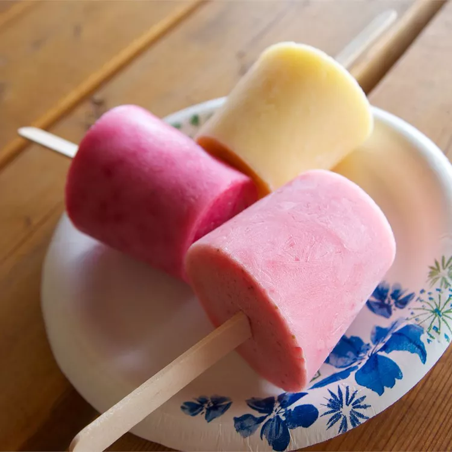

Tropsicles

Ingredients
- 1 ½ cups low-fat vanilla yogurt
- 1 cup sliced mango
- 1 (8 ounce) can pineapple chunks, undrained
- 1 small banana
- 1 orange, juiced
Directions
- Blend yogurt, mango, pineapple chunks with juice, banana, and orange juice in a blender until smooth. Pour into ice pop molds; freeze until set, 4 to 6 hours.